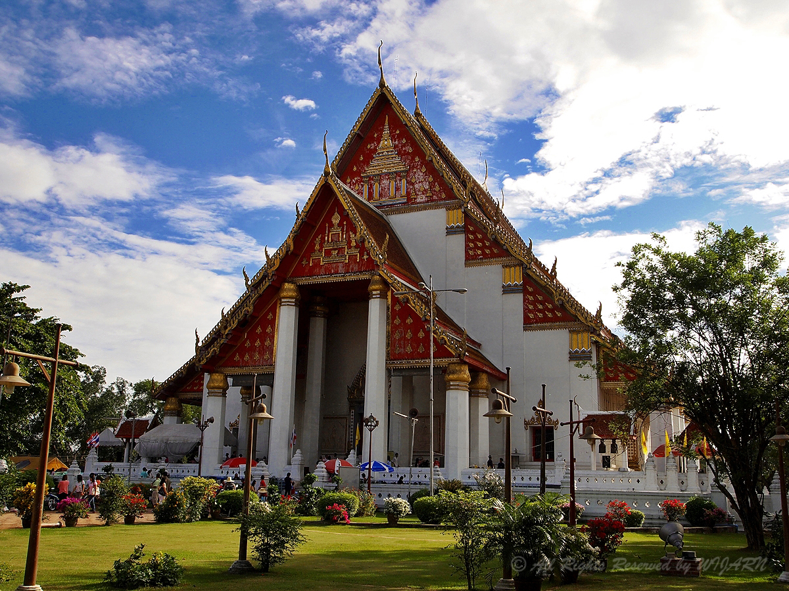
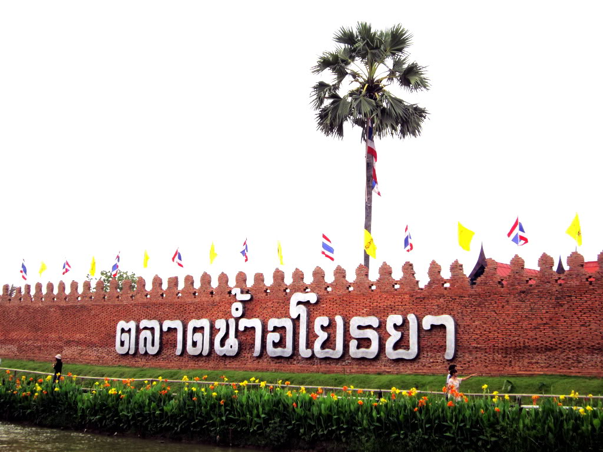

จังหวัดพระนครศรีอยุธยา หรือเรียกสั้นๆ ว่า "อยุธยา" ตั้งอยู่ในภาคกลางเป็นเมืองหลวงเก่าของไทย สร้างขึ้นเมื่อ พ.ศ. 1893 โดยสมเด็จพระเจ้าอู่ทอง
หรือ สมเด็จพระราคมธิบดีที่ 1 ในเวลา 417 ปี ที่กรุงศรีอยุธยาเป็นราชธานี มีกษัตริย์ปกครอง 33 พระองค์ จาก 5 ราชวงศ์ คือ
ราชวงศ์อู่ทอง ราชวงศ์สุพรรณภูมิ ราชวงศ์สุโขทัย ราชวงศ์ปราสาททอง และราชวงศ์บ้านพลูหลวง นับเป็นราชธานีของไทยที่มีอายุยืนยาวที่สุดในประวัติศาสตร์ชาติไทย
ตลอดระยะเวลา 417 ปีที่กรุงศรีอยุธยาเป็นราชธานีแห่งราชอาณาจักรไทย มิได้เพียงเป็นช่วงแห่งความเจริญสูงสุดของชนชาติไทยเท่านั้น
แต่ยังเป็นการสร้างสรรค์อารยธรรมของหมู่มวลมนุษย์ชาติ ซึ่งเป็นที่ประจักษ์แก่นานาอารยประเทศอีกด้วย แม้ว่ากรุงศรีอยุธยาจะถูกทำลายเสียหายจากการสงครามจากประเทศเพื่อนบ้านและจากน้ำมือการบุกรุกขุดค้นของพวกเรากันเองแล้ว
ส่วนที่ปรากฏ ในปัจจุบันนี้ยังมีร่องรอยหลักฐานซึ่งแสดงให้เห็นอัจฉริยภาพ และความสามารถยิ่งใหญ่ของบรรพบุรุษแห่งราชอาณาจักรผู้อุทิศตนสร้างสรรค์ความเจริญรุ่งเรือง
ทางศิลปวัฒนธรรม และความมั่งคั่งไว้ให้แก่ผืนแผ่นดินไทยหรือแม้แต่ชาวโลกทั้งมวล ซึ่งเป็นที่น่ายินดีว่า ยูเนสโก้(UNESCO)
โดยคณะกรรมการมรดกโลกได้มีมติรับนครประวัติศาสตร์พระนครศรีอยุธยา ซึ่งมีอาณาเขตครอบคลุมอุทยานประวัติศาสตร์พระนครศรีอยุธยา
ซึ่งเป็นพื้นที่ส่วนหนึ่งใจกลางกรุงศรีอยุธยาที่ได้รับการจัดตั้งเป็นอุทยานประวัติศาสตร์ มาตั้งแต่ปี พ.ศ. 2519
วัดมงคลบพิตร

ถึงครานี้ Group วัน พาเที่ยว จะพาหลายๆท่านมาเที่ยวในจังหวัดอยุธยา ที่ซึ่งเคยเป็นเมืองหลวงของประเทศไทยมาแต่ครั้งก่อน ถ้าจะกล่าวถึงวัดเก่าแก่คู่บ้านคู่เมือง
คงต้องกล่าวถึงวัดมงคลบพิตร ซึ่งเป็นวัดเก่าแก่สมัยกรุงศรีอยุธยาเป็นราชธานี โดยมีประวัติดังนี้ ประวัติโดยสังเขบของ วัดมงคลบพิตร
(พระนครศรีอยุธยา) วิหารพระมงคลบพิตร ถ้าตามพระราพงศาวดารฯบริเวณที่ตั้งวิหารนี้เคยเป็นวัด ในแผ่นดินสมเด็จพระเจ้าทรงธรรมเพราะระบุว่าโปรดอัญเชิญพระพุทธรูปขนาดใหญ่
นามว่า “มงคลบพิตร” มาจากพื้นที่ทางตะวันออกต่อจากนั้นก็ทรงก่อมณฑปครอบ ครั้นถึงรัชกาลสมเด็จพระเจ้าอยู่หัวบรมโกศ โปรดเกล้าให้มีการบูรณะปฏิสังขรณ์
พระมงคลบพิตรขึ้นอีกครั้งหนึ่ง โดยโปรดให้ทำบัวหงายคั่นระหว่างพระเกตุมาลากับพระรัศมี ส่วนพระวิหารนั้นก็โปรดให้รื้อเครื่องบนออก
แล้วก่อหลังคาให้เหมือนดังพระวิหารทั่วไป ต่อมาเมื่อกรุงศรีอยุธยาเสียแก่พม่าครั้งที่ ๒ พ.ศ. ๒๓๑๐ นั้น พม่าเข้าใจว่าพระมงคลบพิตรเป็นพระพุทธรูปทองคำ
จึงได้ใช้ไฟสุมลอกทอง จนกระทั่งองค์พระ ตลอดจนพระวิหารได้รับความเสียหายมาก โดยเฉพาะเครื่องบนพระวิหารที่หักลงมา ต้องพระเมาฬีและพระกรข้างขวาจนแตกหัก
ตกลงมากลายเป็นซากปรักหักพัง นับแต่นั้นมาจนกระทั่งถึงรัชกาลพระบาทสมเด็จพระจุลจอมเกล้าเจ้าอยู่หัวรัชกาลที่ ๕ จึงได้มีการบูรณะปฏิสังขรณ์ขึ้น
เมื่อครั้งพระยาโบราณราชธานินทร์ ดำรงตำแหน่ง สมุหเทศาภิบาลมณฑลกรุงเก่าครั้งนั้นได้มีการซ่อมพระเมาฬีและพระกรข้างขวา ด้วยปูนปั้น
ส่วนพระวิหารที่อยู่ในสภาพชำรุดทรุดโทรม ก็ได้มีการบูรณะขึ้นใหม่ด้วยเช่นกัน ใน พ.ศ. ๒๔๗๔ คุณหญิงอมเรศศรีสมบัติ มีศรัทธาที่จะปฏิสังขรณ์ฐานพระมงคลบพิตรขึ้นใหม่
ครั้นนั้นจำเป็นต้องลบรอยปูนปั้นของเดิมออกจนหมด ครั้นถึง พ.ศ. ๒๔๙๙ จอมพลแปลก พิบูลสงคราม นายกรัฐมนตรี ได้สั่งให้มีการ
บูรณะปฏิสังขรณ์พระมงคลบพิตร และพระวิหารขึ้นใหม่อีกครั้งหนึ่ง โดยเฉพาะองค์พระมงคลบพิตรนั้นได้ทาสีดำตลอดทั้งองค์ พ.ศ.
๒๕๓๓ สมเด็จพระญาณสังวร สมเด็จพระสังฆราชสกลมหาสังฆปริณายก เสด็จมาเป็นองค์ประธานเททองหล่อพระพุทธรูปพระมงคลบพิตรจำลอง ได้ประทานพระราชดำริว่าควรปิดทององค์พระมงคลบพิตรทั้งองค์
ทำให้องค์พระพุทธรูปมีพุทธลักษณะที่งดงาม น่าเลื่อมใสศรัทธายิ่งขึ้น เวลาทำการ เปิดทุกวัน เวลา 08.30-16.30
ตลาดน้ำอโยธยา
หลังจาก Group วัน พาเที่ยว ได้พาไป นมัสการ "หลวงพ่อมงคลบพิตร" ณ วัดมงคลบพิตร หลังจากได้ชมบรรยากาศโดยรอบ รู้สึกท้องเริ่มหิวแล้ว
Group วัน พาเที่ยว จึงขอนำเสนอแหล่ง ช๊อป ชิม ชิล ที่ตลาดน้ำอโยธยา ตลาดน้ำย้อนยุคซึ่งมีกลิ่นอายตลาดน้ำสมัยอยุธยา
ลาดน้ำอโยธยา เป็นสถานที่ท่องเที่ยวแห่งใหม่ในอยุธยา เปิดให้บริการทุกวัน เวลาที่เหมาะในการมาเที่ยวคงจะเป็นช่วงเย็นของทุกวันครับ
เพราะแดดร่มลมตก อากาศเย็นสบายเดินช๊อปปิ้งสบายใจแน่นอน ยิ่งวันหยุดคนอาจจะเยอะหน่อยนะครับ แต่รับรองว่ามีของที่ระลึกแบบอโยธยาให้หาฝากกันเพียบ
ของกินอีกมากมายให้กินกันทั้งวันล่ะครับ ตลาดน้ำอโยธยา เป็นจุดศูนย์รวมนัก ท่องเที่ยวชาวไทย และชาวต่างชาติที่จะได้เพลิดเพลินไปกับบรรยากาศ
และทัศนียภาพอันงดงามแบบไทยๆ ด้วยการเดินชมตลาดเพื่อชิมอาหารรสชาดอร่อยๆ เรียบคลองยาว หรือจะซื้อหาของกินของฝากบนร้านค้า
ที่ตั้งเรียงรายอยู่ในเรือนไทยอันงดงาม รอบตลาดน้ำอโยธยาของเรา ก็เพลิดเพลินไม่แพ้กัน พร้อมกันนี้ก็ยังมีเรือบริการรับส่ง
ไปยังท่าเรือภายในตลาดอีกด้วยเพื่อ สะท้อนถึงวิถีการ เดินทางในสมัยก่อน ตลาดน้ำอโยธยา จ.พระนครศรีอยุธยา เป็นสถานที่ท่องเที่ยวเชิงอนุรักษ์ทางศิลปวัฒนธรรมไทย
ที่ใหญ่ที่สุดในจังหวัดพระนครศรีอยุธยามีวัตถุประสงค์เพื่อ ที่จะให้สถานที่แห่งนี้เป็นสถานที่ท่องเที่ยว และศึกษาเชิงอนุรักษ์ศิลปะวัฒนธรรมไทยตั้งแต่สมัยอยุธยาทั้งด้านการ
แต่งกายสถาปัตยกรรมที่งดงาม และคงเอกลักษณ์ขนบธรรมเนียมประเพณี การละเล่น และแสดงพื้นบ้าน ของกินของใช้ในยุคเก่า วิถีชีวิตความเป็น
อยู่อย่างไทยๆ ที่เรียบง่าย จุดเด่นอีกเรื่อง หนึ่งที่ตลาดน้ำอโยธยาได้นำมารวบรวมไว้ที่นี่ คือการนำชื่ออำเภอทั้งหมดของ
จังหวัดพระนคร ศรีอยุธยาทั้งหมด มาตั้งเป็นชื่ออาคาร สถานที่ เพื่อให้ผู้ที่มาเยือนได้รู้จักสินค้าของแต่ละอำเภอ และสามารถจดจำชื่ออำเภอต่างๆ
ของจังหวัดพระนครศรีอยุธยาได้เป็นอย่างดี
ตั้งอยู่ที่ 65/12 หมู่ 7 ตำบลไผ่ลิง อำเภอพระนครศรีอยุธยา จ.พระนครศรีอยุธยา โทรศัพท์ 0-3588-1678 โทรสาร 0-35881699

จังหวัดอยุธยายังมีที่เที่ยวอีกมากมาย ขอบพระคุณสำหรับการรับชม ในโอกาศหน้า Group วัน พาเที่ยว จะพาไปไหนอีกโปรดติดตามต่อไปนะครับ...
^u^